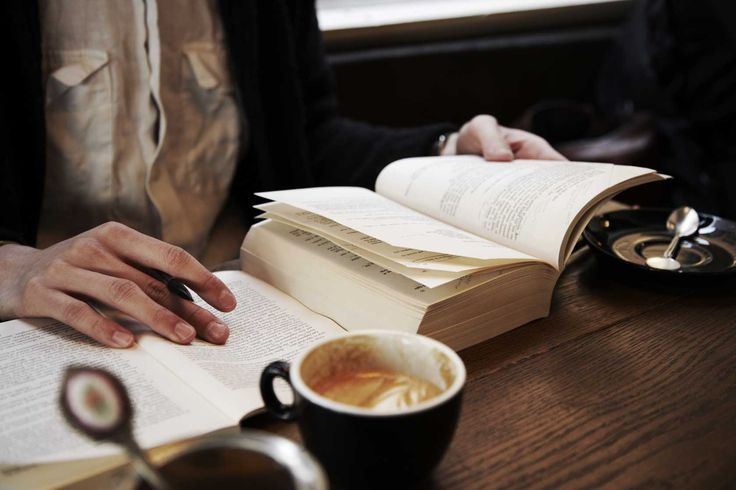
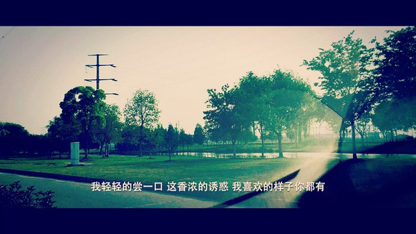

-
不管日后你漂到哪个城市都不要忘记你的信仰和初衷！
宅了一天，沉醉了安静的感觉。你的酒窝没有酒，而我却醉的像只狗。晌午看陈丹青的演讲，虽没怎么具体读他的书但却深深的感觉这个人不简单，和韩寒一样都是主宰自己思想的墨水人物。读书和思考不是让你在一夜之间暴增多少财富，当然这也不太现实也没有多大意义。悦读与阅读都是带着心灵上路，做笔记，写笔录，反思生命等无疑是自我人生的沉淀，要的是路上肉体行为与精神欲望的碰撞，静静浮躁的内心，和书中人物的对话，揣摩持笔作者的心境与灵魂的交融，那个感觉对浮躁者将是天大的折磨，而我恰好刚刚合适。
世界很大，也很美，我在，希望你也有空。我们都很匆忙，忙于社交，忙于网络，忙于夸大自己的理想，忙于虚荣的外表. . .仔细想想好像我曾经也有过，今天也存在，不过它在垂直领域上确实让你我有存在的意义。现实虽说是残酷的但还是有一定的准则的，想起弟弟之前总爱在一些地方留下自己的座右铭“精益求精”，在外经历几年后有时我也会喜欢把一些小感触写在名片备注上面，“孤独之觞与天道酬勤”是最好的诠释吧！有时你会发现这执行起来对你是多么大的挑战，过来人总是笑而不语，沉默的祝福！我们需要多种情感交织于一体才会品尝人生的各种美味佳肴，吃遍人间烟火方能觉察世间那么多的酸甜苦辣，大多时候我们不缺什么，往往是合适的时间里却缺少了陪伴的你！
笔者没怎么读过书，更别说有勇气谈什么文学素养和文艺创作这些高大上的标签了，养成了写日记和看报纸的习惯，困了就写点东西反而发现这是个提神的好办法。信仰很多时候会随着环境欲望的满足而摇摇欲坠，初衷经过时间的洗刷变得满是疮痍，当初的那个你是长大了还是变强了，我们总爱扑朔迷离的在旁人面前秀弄着自己，这无可厚非，you can you up，no do no bibi！我相信孤独熬出来的力量是巨大并痛苦的！尽管朋友看似很多，知音却总是姗姗来迟，等着，坚守着！故意封闭自己2个月的时间，偶尔写点小记发个朋友圈寓意着笔者还活着，还能带给你能量和快乐，其他的没想太多；放弃了当初一直运营的商业项目，聚焦精力读一些有趣的书，听些音乐，静下来的脚步充实了血肉许多，看见你还安好，远去，终将后有期！
学校是一个学生读书的地方，特别是学习专业知识的地方。不管你今天在什么领域追寻你的梦想，望听此一席话，迫切的功与利只会让你的马拉松赛场越来越窄，因为你的背负已经离自己很远很远了. . . . .
共勉，寻之。
-
精神难受那会你一定要挺过去，想做什么样的自己你想好了？
最近两天头老是很晕，老是迷迷糊糊的想睡又睡不太久，因为心里还堆着许多要处理的日程事务。对于一个超爱玩又极度的工作狂来说无疑是最大的折磨！一直在保养身体丝毫不敢懈怠，本来想把云盘里的路上阐述的语音稿子直接copy以便早点睡觉，心里总觉得不踏实。联系完西藏老友，我真的想买张票马上过去看看雪山，了却心愿一了百了，心想这次冲动最多打个10分，这是现的你？没有思念到不了的地方，我在远方深深的祝福，牵挂。看过简书上面的文章，作者Davis让我明白了大道理和人生到底都有多大的联系和意义：26岁前个人收获最好的礼物是:找到自己的社交圈子，兴趣爱好，优势与战场，以及对抗孤独和控制自己的能力。最后一点，我会誓死追寻。道理都是讲给聪明人听的，因为总结大道理的人都在背稿子，想稿子，想人生，规划梦想(也包括你以为很niubility的Jack Ma).我们都是世界孤独的思考者，行者！我们总爱念叨着一些身边人不以为然的文字，以至于很多时候只能窃窃私语，生怕打扰敏捷聪慧的你，我们本不是一类人，擦肩而过已是上天垂赐的缘分，可惜那时的你我都太年轻，悲哀的是我一直在，而你走不进来，就这样我在门口看着你，想拉你可惜你的脚还拖着破旧的铁链，还在犹豫到底是先迈哪只脚？就这样我们见面多是一笑而过或是根本无暇顾及，我们越走越远，也许某一天可能会再相遇，那么我很期待！
最近特别喜欢和非洲人交往，说实话不比中国人懂的少，人生情趣自愧不如，综合才华仍需潜心修炼。一直在关注创业和创业者，刚看完优酷的一个做微商发财的姑娘的创业史又了起了片片思绪创业没有所谓的性别、行业限制，即使是你尴尬的情趣产品也被身边人做得如火如荼。正如一直坚持的那句话：在合适的时间里，遇到一个合适的平台发挥好自己之前积累的全部综合素养来展现最好的自己！期待身份转变之前多吃一点苦，转变之后多受一点罪，做一些不一样的事情你会有异类的快乐！
这就是你想做的自己，放浪不羁之后的稳定......
-
一片落叶足以折射我的人生，它确实值得尊重和歌颂！
走在去图书馆的路上，黄昏，矫情的微风暖阳绵绵而来，看着花坛里争先恐后的细竹笋左右打晃，我乐了似乎想到了什么。
也许路上许多不以为意的细节你一晃而过，但对于我来说却是最好的素材和笔下的故事，我时刻保持警惕的头脑不断观察着，等着想着记录下来，送给自己和朋友，留作回味。微风吹过，树叶不停地摇摆着，就在我的眼前一颗树叶摇摇坠坠飘到我的肩上，我知道和你相遇也算缘分吧！因为它也是生命，也值得尊重和歌颂，而且来去比我们人类有规律多了。就像那句诗“轻轻的我走了，正如我轻轻的来；我轻轻的招手，作别西天的云彩”，来去匆匆，生死有命。值得歌颂的是它的落叶归根，诠释了一生的成长。经历了风霜雪雨换来了路人的夏日荫荫，留给“母亲”的是循环的情谊。我真想替它说出“我们来生还是母子”的心语，浮想联翩起了“一花一世界，一叶一菩提”，不知怎么今天想了这么多哲学的道理，但确实值得反复斟酌思考的人生不也是“落叶”的走一遭？
来世不易，身边皆是美和有灵性的生物，确实该擦亮眼睛好好爱了！
-
如果有一天我死了，化作天上的星星，而你又在哪里？
本来这个点写完客户网站code想睡觉了，可是我还是不肯放过自己，因为我还没有把昨天记录下来，即便睡着的肉体也是空虚的。
生活可以慢点，知己可以少点，但是绝对不能中止习惯，否则就会忘记自己！
晚上回来走在寂静的马路上，渐停了小雨，无意间抬头看看夜空，发现许多孤零零的辰星，分布的毫无规律，好像我身边的人一样都支支零零，忙忙碌碌，乐死不疲。我们都是世界孤独的行者，想起梵高用画笔把孤寂融合在向日葵里，笔者只是刚刚入门而已，瞎写了几笔。

想起西藏老友，我们虽多年不见但偶尔通话也显得很亲很亲。分别之后经历不同的人生和故事，身处的城市每天都会有800万个故事上演着，所以世界不会因为少了谁而少了点什么，活着就好，不要太离不开他(她)。不知道你有没有发现一般你很欣赏很喜欢的人都不会是你要好的朋友，而你要好的朋友相处太久就会发现对方缺点很多很多，但只有他包容你懂你支持你，这一点可能你也悟到了。与朋友呆在一起就是换种感觉，没有他们你也要学会一个人享受幸福，不要认为一个人是多么可怕的事只是你可能还没太习惯而已！累了就会去咖啡馆坐坐，看看杂志，睡前看看微信文章...大把时光可以留给自己“挥霍”，世界很美，当你有空的时候拿出笔写张明信片寄给远方的她，这也是一种很美好的感觉。
不要说或者觉得自己孤单，因为你还有我，还有自己要爱！
后来我懂了，星星也在旋转，一直寻找万有引力相吸的同类直到陨落；无论找到与否，它都会发光发亮，活着也就是这样吧!
-
好好照顾自己，让自己在最好的状态里，遇到最好的她，要相信你的明天！
不管你现在是一个人走在异乡的街道上始终没有找到一丝归属感，还是你在跟朋友们一起吃饭开心地笑着的时候闪过一丝落寞。不管你现在是在图书馆里背着怎么也看不进去的英语单词，还是你现在迷茫地看不清未来的方向不知道要往哪走。不管你现在是在努力着去实现梦想却没能拉近与梦想的距离，还是你已经慢慢地找不到自己的梦想了。
有的时候你的梦想太大，别人说你的梦想根本不可能实现；有的时候你的梦想又太小，又有人说你胸无大志；有的时候你对死党说着将来要去环游世界的梦想，却换来他的不屑一顾，于是你再也不提自己的梦想；有的时候你突然说起将来要开个小店的愿望，却发现你讲述的那个人，并没有听到你在说什么。不过又能怎么样呢，未来始终是自己的，梦想始终是自己的，没有人会来帮你实现它。也许很多时候我们只是需要朋友的一句鼓励，一句安慰，却也得不到。但是相信我，世界上还有很多人，只是想要和你说说话。
因为我们都一样。
一样的被人说成固执，一样的在追逐他们眼里根本不在意的东西。 所以，又有什么关系呢，别人始终不是你不能懂你的心情，你又何必多去解释呢。这个世界会来阻止你，困难也会接踵而至，其实真正关键的只有自己，有没有那个倔强。这个世界上没有不带伤的人，真正能治愈自己的，只有自己。
有的时候很懒，懒到去经营一份感情，懒得去走进其他人的生活；又或者有的时候，昨天跟你擦肩而过的那个人，今天不经意地走进你的生命里；有的时候，你很在乎的那个人，却又悄无声息地离开了，却把你们的回忆留下了。
高中里你喜欢上一个女生，却不敢去告白，实际上，那个女生也喜欢你，一直在等你的那句话，于是你们错过了；大学里，有人来到你的生命里，你们爱的轰轰烈烈，可是到后来，你们还是分开了。这一切还是都过去了，你还是一个人，偶尔会孤单偶尔会难受也会想有个人拥抱，所以你还是在等。没关系，你一定会等到的。你一定要相信，那个人也在经历了很多之后在找你。你要做的，就是好好照顾自己，让自己在最好的状态里，遇到最好的他。
曾经说着的梦想，你也没能实现，可是你却在实现梦想的努力中，找到了喜欢的那个自己。
也许你到最后也没能家喻户晓，不过没关系，因为你的朋友，都很开心能够认识这样的一个你。也许你到最后也没能牵到喜欢的那个人的手，不过没关系，因为你，已经在她的心里面了。
喜欢一个人就去追，因为在这一辈子里面，你可能只有这一次机会能牵到那个人的手了。 有梦想就去努力，因为在这一辈子里面，现在不去勇敢的努力，也许就再也没有机会了。 你要去相信，一定要相信，没有到不了的明天。
-
累了或情绪不好时你是怎样泡互联网的呢？
母亲节刚过去几个钟头，联系完老妈不久，她还是那样像“唠叨”着所谓“长不大”的儿子，希望她健康平安幸福下半辈子，也期待有一天儿子可以让她引以为豪！
今天不管是我的父母还是我爱的人，我都在心里深深装着他们。不太希望听到周围的人说我忙和累，自我感觉这是无能和低效率的表现。如果你有这种想法可能是彼此的追求不同罢了。我感觉自己很放松，做自己喜欢的事情和看自己想看的世界，看着身边许多的影子，想提许多建议可又怕搅碎了梦，受不了波波涟漪。今天大家的物质生活和精神享受都比较丰富，游走在互联网社区，太多的人在夜间与屏幕作伴，没事写点做点东西发到网上以求得到圈里人的肯定以至于乐的像个拿红花的孩子，我们普遍都这样，是一种系统默认的虚荣权利。这没有大错，是你的青春欲望激素分泌的太多而无法抑制，至少我感觉能够正面影响身边的人也很好啊！

这个城市承载了太多的梦想，钢筋水泥，物欲横流下兢兢业业的我们。想起那句话“少年不愁滋味，为赋新词强说愁”，我们伪装笑脸，伪装坚强，确实有时会感到一些压力，累成了大家挂到嘴边的字眼。慢慢的长大发现身边的人会触发这些敏感的词语而我却很少有过，笔者成熟的着急些。这个故事好像还得从上大学初那会认识的一个女生说起，她是一位谈不上多么美多么优秀的姑娘，但有一点已经影响了我的一生。不要把不快乐的情绪带进你的所有圈子，要尽可能带给身边人更多的正能量和快乐。我永远记着这种念想并践行着，说实话我真的很感激她，可惜的是我已好久没联系她而深表遗憾。
浮躁和烦恼都是磨练你的最好条件，请爱上他们。一般我会走进飘着书墨香的图书馆，找一个靠窗的位置，放下笔记本和笔，绕过书架，找一本书，或许挤满灰尘，或许生了一条书虫，都没有关系。在书中，我可以独处，感受多少年前某个人读同一本书时的心情，读懂自己，外面一切的富贵欲望，喧嚣情感都忘的一干二净，就这样简简单单。累，一直不是问题和借口，我们如约而至，一直有个很协调的约定。
踏着月色，回宿舍，休息。次日，平和地面对生活
-
生之所至，爱有所及！
昨晚打了几个电话由于太晚提前睡了，早上匆忙赶到工作室，整理笔记日记和技术图稿。记得某个同学问的问题:关于“生之所至，爱有所及”的解释；

当时看着面熟记得是一位豆瓣上作家笔下人物大卫分手时说过的话，但我的视野却不单纯爱情这么片面，对于爱情很好奇，却不敢戳破这层纱。也许有时爱过就不敢再爱了吧！面对爱情，首先要有自己的基本物质精神生活。生活是简单的，也尽可能简单的生活。在有生之年，要尽可能实现人生的最大价值，当然要看你要什么的生活，是想要斗士的一生，还是朝九晚五的形体。尽力而已，生命就是这样，不是你的即便你尽其所至终将无缘，随缘。爱，首先你是一个爱自己的人，懂得爱和分享爱，但你终究时间和能力有限，一生大部分时间陪伴频率与你最近的人，伴侣父母，接着是同事团队，然后好基友闺蜜，就这样，把爱这块蛋糕和他们一起吃，那些擦肩而过的人就是闻闻而已，抹一下嘴走人，不用太着急把你的爱撒的太开，一生不需太多圈子，时间太短太快，尽可能对得起他人，不欠爱足矣。我们都会死很久，至极一生爱值得爱的人。如果我还活着，那么我会一直爱下去。《泰坦尼克号》的故事杰克与露丝的爱情，我还记得清清楚楚，我爱你，生时尽己，死矣永存。
后来在豆瓣上又读了相关作者李荷西 《所念人，所感事》的书，一座城市，你想要经历，总会见很多的人，听太多的故事。时间，总是让深的东西越来越深，让浅的东西越来越浅。在我们身上，你以为爱情可以填满人生的遗憾，可到后来制造更多遗憾的却偏偏是爱情。有时候，回头看看身边的人和事儿，方能彻底理解生活，方能在旅途中长大。一个城市，几个男女，几段爱情故事，落幕！
故事太多，我会用心去听，去看. . . . . .
-
备注声明
工作原因，文章板块均移步到微信公众平台的原创媒体，感兴趣者可以添加微信号：PhotoArtLife(或识别右侧二维码添加编辑WeChat)
二维码
微博私信
回到顶部